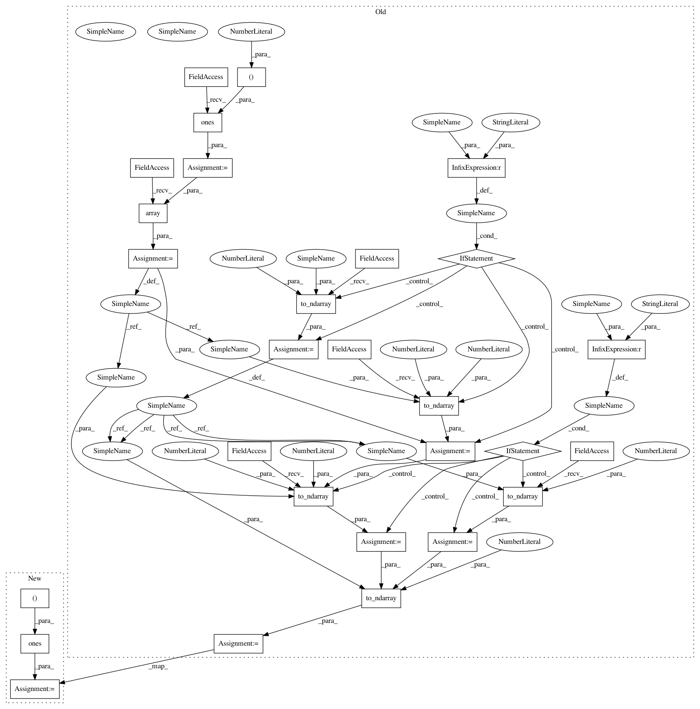

cb39a024f222364076056b39e925c0be51834629,geomstats/learning/frechet_mean.py,,_default_gradient_descent,#Any#Any#Any#Any#Any#Any#Any#,91
Before Change
n_points = gs.shape(points)[0]
if weights is None:
weights = gs.ones((n_points, 1))
weights = gs.array(weights)
mean = points[0]
if point_type == "vector":
weights = gs.to_ndarray(weights, to_ndim=2, axis=1)
mean = gs.to_ndarray(mean, to_ndim=2)
if point_type == "matrix":
weights = gs.to_ndarray(weights, to_ndim=3, axis=1)
mean = gs.to_ndarray(mean, to_ndim=3)
if n_points == 1:
return mean
sum_weights = gs.sum(weights)
sq_dists_between_iterates = []
iteration = 0
sq_dist = gs.array([[0.]])
var = gs.array([[0.]])
while iteration < max_iter:
condition = ~gs.logical_or(
gs.isclose(var, 0.),
gs.less_equal(sq_dist, epsilon * var))
if not (condition or iteration == 0):
break
logs = metric.log(point=points, base_point=mean)
tangent_mean = gs.einsum(einsum_str, weights, logs)
tangent_mean /= sum_weights
estimate_next = metric.exp(tangent_vec=tangent_mean, base_point=mean)
sq_dist = metric.squared_dist(estimate_next, mean)
sq_dists_between_iterates.append(sq_dist)
var = variance(
points=points,
weights=weights,
metric=metric,
base_point=estimate_next,
point_type=point_type)
mean = estimate_next
iteration += 1
if iteration == max_iter:
logging.warning(
"Maximum number of iterations {} reached. "
"The mean may be inaccurate".format(max_iter))
if verbose:
logging.info("n_iter: {}, final variance: {}, final dist: {}".format(
iteration, var, sq_dist))
mean = gs.to_ndarray(mean, to_ndim=2)
return mean
def _ball_gradient_descent(points, metric, weights, max_iter,
After Change
n_points = gs.shape(points)[0]
if weights is None:
weights = gs.ones((n_points,))
//weights = gs.ones((n_points, 1))
// weights = gs.array(weights)
mean = points[0]
In pattern: SUPERPATTERN
Frequency: 3
Non-data size: 28
Instances
Project Name: geomstats/geomstats
Commit Name: cb39a024f222364076056b39e925c0be51834629
Time: 2020-04-17
Author: ninamio78@gmail.com
File Name: geomstats/learning/frechet_mean.py
Class Name:
Method Name: _default_gradient_descent
Project Name: geomstats/geomstats
Commit Name: d5533f81419230ef82e3411ede0301d535ec828a
Time: 2020-04-16
Author: ninamio78@gmail.com
File Name: geomstats/learning/frechet_mean.py
Class Name:
Method Name: _default_gradient_descent
Project Name: geomstats/geomstats
Commit Name: cb39a024f222364076056b39e925c0be51834629
Time: 2020-04-17
Author: ninamio78@gmail.com
File Name: geomstats/learning/frechet_mean.py
Class Name:
Method Name: _default_gradient_descent
Project Name: geomstats/geomstats
Commit Name: 87f2a2ef4009005451be9daee4284ee63152f0bf
Time: 2020-04-17
Author: ninamio78@gmail.com
File Name: geomstats/learning/frechet_mean.py
Class Name:
Method Name: _default_gradient_descent